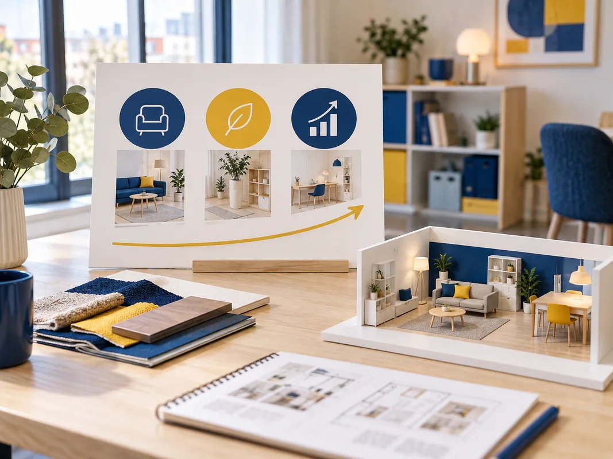

Mission veille IKEA
Construisez votre dossier de veille sur IKEA
Préparez les quatre parties du dossier individuel TPRA738 : cadrage de la veille, collecte et traitement de l’information, analyse de l’environnement externe et recommandations stratégiques.
Commencer la missionVotre parcours
0 / 6 missions · commencez par l’étape 1
Présenter
Commencez la partie I de votre dossier en présentant IKEA et la problématique qui motive votre veille.
I.1 et I.2Cadrer
Définissez une démarche de veille adaptée à la problématique d’IKEA que vous avez identifiée.
I.3Collecter
Présentez les sources et les outils utilisés pour conduire votre veille sur IKEA.
II.1 et II.2Synthétiser
Sélectionnez et présentez les résultats significatifs obtenus au cours de votre veille.
II.3Analyser
Rédigez les trois analyses de l’environnement externe prévues dans la partie III du dossier.
III.1 à III.3Recommander

Proposez des recommandations pour IKEA à partir des résultats et des analyses de votre veille.
IV.1 à IV.3